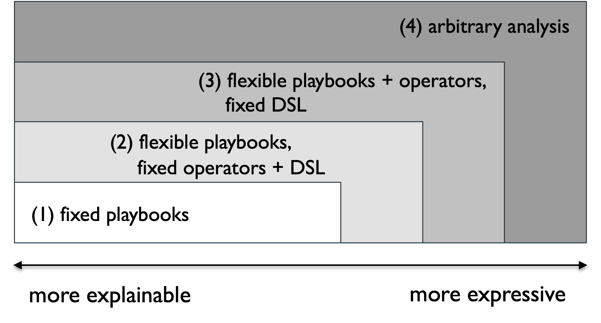
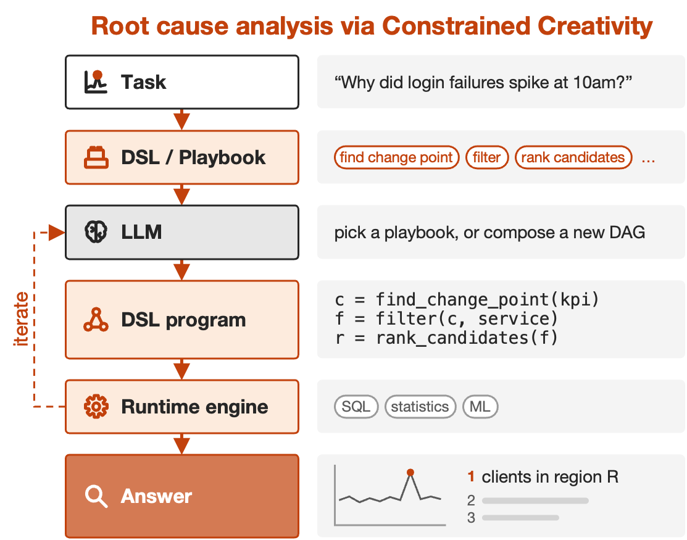
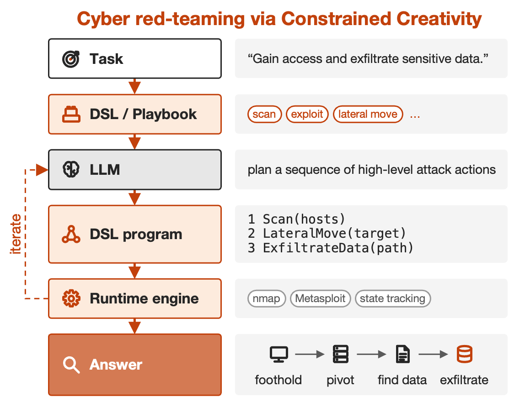

AI agents are getting more capable and knowledgeable, but these capabilities have not been translated into reliability. It is fundamentally difficult for AI agents to be general purpose and fully automated at the same time in high-stakes applications, where reliability must come first (see Arvind Narayanan’s keynote[2]).
We see this tension first-hand in systems, networking, and cybersecurity. For example, in system root cause analysis (RCA), the agent must handle very different failures, from unusual user groups to subtle event sequences. In network management, operator requests are diverse and unpredictable, and AI-generated programs must obey strict network invariants. In cybersecurity, autonomous attackers need to coordinate many steps across many machines. Across all of these applications, we found that free-form coding agents can be expensive and hard to verify.
Our idea: constrain the space in which AI is allowed to be creative
We propose a different philosophy for building AI agents: Constrained Creativity[1]. Instead of letting AI act arbitrarily, we give AI the least freedom it needs, and only expand that space when necessary.

A key part of Constrained Creativity is choosing how much freedom to give the AI. More constraints make the agent easier to understand and verify, but they also limit what it can do. At one extreme, we can give the agent a fixed playbook. This is easy to trust, but it only handles situations we already anticipated. At the other extreme, we can let the agent write arbitrary analysis code. This gives maximum flexibility, but its behavior becomes much harder to inspect and verify.
To find the right level of constraint for a specific task, the first step is to choose the right abstraction. An abstraction hides low-level details and keeps only the concepts that actually matter. We then turn that abstraction into a domain-specific language (DSL). You can think of a DSL as a small language designed for one kind of problem. It defines the vocabulary the AI can use, and the rules for how those pieces can be combined.
The DSL then becomes a language for AI to think in and execute against. Instead of reasoning over a huge space of arbitrary code and actions, the AI works with a smaller set of meaningful building blocks. These blocks can then be executed by a domain-specific runtime engine, whether that means SQL queries, statistical analysis, stateful event processing, or other specialized tools. The AI still has room to be creative in how it combines them, but its reasoning now stays within a space that humans can understand, check, and control.
Two concrete examples of Constrained Creativity
We showcase how to build Constrained Creativity in two applications, and how it can improve accuracy while reducing cost.
Root cause analysis. In the RCA task, we represent troubleshooting as reusable building blocks, such as generating possible causes, comparing them against normal behavior, and ranking the evidence. The AI can only combine these blocks into a diagnosis workflow instead of writing arbitrary analysis code. If the existing blocks are not enough, it can create new ones while still following the same DSL. This gives the agent room to handle new incidents, but keeps every analysis structured and checkable.

Cybersecurity red-teaming. Incalmo[3] follows the same idea for autonomous network attacks. Instead of letting an AI directly write low-level shell commands, it gives the agent higher-level actions such as scan a network or infect a host. Incalmo handles the messy low-level execution and keeps track of the network state. This lets the AI focus on deciding what to do next, rather than on how to implement every command correctly.

How is Constrained Creativity different from X?
We have recently seen synergies between Constrained Creativity and many newly released AI tools and concepts. Let’s use the same RCA task as an example:
| Idea | RCA: “Why did login failures spike at 10am?” | What AI produces | Strength + limitation vs. CC |
|---|---|---|---|
| Jev / Decision APIs [4] | Ask an atomic question like “Which service is most suspicious?” | A typed decision, e.g. Choice = AuthService |
Reliable typed decisions. For a multi-step RCA, developers still need to manually define which questions to ask and in what order. CC lets the AI build that investigation workflow itself, within a constrained DSL. |
| Structured LLM [7] | Give the incident + a grammar/schema | A grammar-conforming output, e.g. valid SQL, JSON, or structured code | Guarantees structured output. A valid SQL query or program can still perform the wrong analysis. CC constrains the model to domain-approved operations and valid ways of combining them. |
| Neuro-symbolic AI [5], [6] | Combine telemetry with neural models and symbolic rules | A symbolic conclusion such as AuthService_failure = true |
Makes reasoning more explicit. It does not by itself restrict what an agent can do after reaching that conclusion. CC also constrains the agent’s executable actions and workflow. |
| Constrained Creativity [1] | Give the incident + RCA operators/playbooks | A DSL workflow, e.g. find candidate causes → compare 10am vs baseline → score → rank |
Constrains the full investigation. AI chooses the workflow, but every step comes from domain-specific programs and follows rules we can verify and execute. |
Constrained Creativity vs. Jev and decision APIs. Jev from TypeSafe AI[4] follows a very similar philosophy with a specific set of decision primitives. Jev’s output space is deliberately narrow: rather than asking the model to directly answer a complex question, it asks the model to make one typed decision. TypeSafe explicitly recommends decomposing complex decisions into atomic questions and composing their answers in code. OpenAI’s latest decision APIs propose similar ideas.
Constrained Creativity is broader than a particular set of decision primitives (e.g., a classification, a boolean, or a score). It can use different abstractions: for example, query telemetry, compare two time windows, generate a candidate hypothesis, validate a configuration, or execute a controlled system action. The answering structure can also extend beyond atomic questions: the AI can form a sequential chain, a parallel DAG, an iterative workflow, or a finite-state machine. The abstraction itself can also evolve as the task requirements change.
Constrained Creativity vs. neuro-symbolic AI. Neuro-symbolic AI also tries to combine the flexibility of neural models with explicit structure. The key idea is to connect neural learning or perception with symbolic knowledge and reasoning. For example, DeepProbLog[5] combines neural networks with probabilistic logic, while Neural Logic Machines[6] use neural networks to learn and execute logic-like rules.
Constrained Creativity has a different goal. It does not require the neural model and the symbolic reasoning system to be integrated or jointly learned. The LLM can remain a black box. Instead, Constrained Creativity puts domain knowledge around the agent to define the space in which it can act, while leaving the model free to reason within that space.
Constrained Creativity vs. Structured LLM. Researchers from UIUC proposed Structured LLM[7], which shares a similar idea with Constrained Creativity. Their work focuses on making the model follow a given structure or grammar, such as valid JSON, code, or other structured outputs. This can make generation more reliable and easier for software to consume.
Constrained Creativity goes beyond constraining the format of the output. It constrains what actions the AI can take and how those actions can be combined. Structured LLM can be a concrete building block for Constrained Creativity at the decoding level, while Constrained Creativity designs the broader action space and workflow around the AI.
What comes next for Constrained Creativity
Constraining AI is not automatically better. Too little freedom makes the agent rigid; too much brings us back to arbitrary code and difficult verification. We believe the key systems challenge is finding the right abstraction: expressive enough to handle new situations, but structured enough to understand, verify, and control.
We are actively bringing Constrained Creativity to more critical applications across networking, systems, and cybersecurity. Our goal is simple: with the right constraints, we can unlock more of AI’s capability while making it cheaper, safer, and easier to trust. Stay tuned.
References
- Constrained Creativity for SysOps Agents. Preprint, 2026. Sayan Sinha, Vipul Harsh, Lesley (Yajie) Zhou, Marko Morrison, B. Aditya Prakash, Vyas Sekar, Hui Zhang. [preprint]
- What will be left for us to work on. ICML 2026 keynote. Arvind Narayanan. [slides]
- Incalmo: An Autonomous LLM-Assisted System for Red Teaming Multi-Host Networks. IEEE Symposium on Security and Privacy (S&P), 2026. Brian Singer, Keane Lucas, Lakshmi Adiga, Meghna Jain, Lujo Bauer, Vyas Sekar. [doi]
- Jev primitives. TypeSafe AI documentation. [docs]
- DeepProbLog: Neural Probabilistic Logic Programming. NeurIPS, 2018. Robin Manhaeve, Sebastijan Dumančić, Angelika Kimmig, Thomas Demeester, Luc De Raedt. [arXiv]
- Neural Logic Machines. ICLR, 2019. Honghua Dong, Jiayuan Mao, Tian Lin, Chong Wang, Lihong Li, Denny Zhou. [arXiv]
- Structured LLM. UIUC. [website]